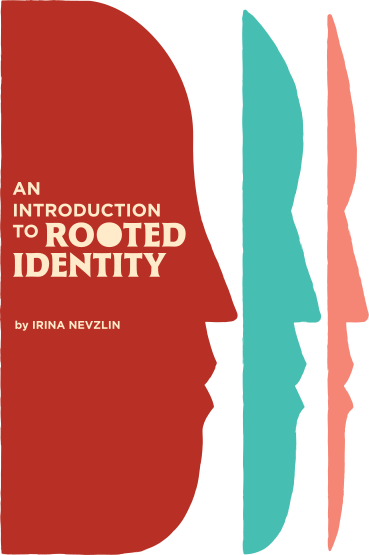
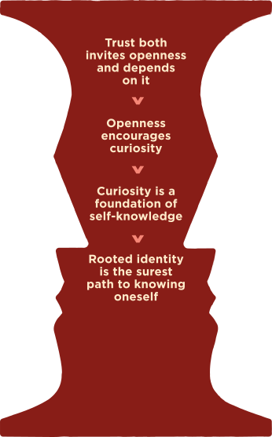
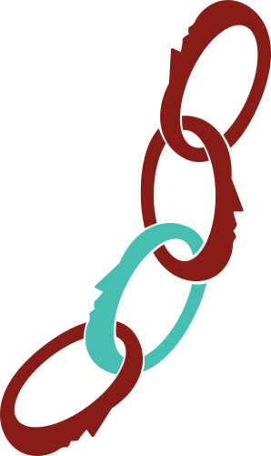
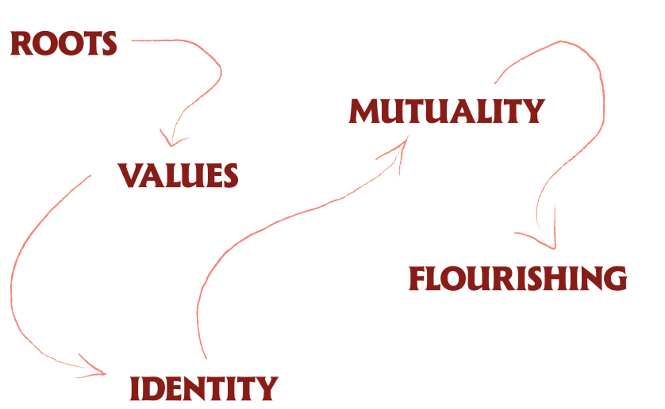

Rooted Identity Theory proposes that openness to others depends on a serious relationship with oneself. By consciously engaging one’s roots—family, culture, history, and formative experiences—individuals can develop stable identities that enable genuine mutual relationships. This grounded identity reduces polarization and enables both personal and collective flourishing.
We are living in a time of profound disconnection. Not just from each other—though that’s real enough—but from ourselves. We’ve lost track of who we are. This isn’t just about social or political divides; it runs deeper than that. The more polarized we become, the less we trust—because when everything becomes binary, nuance looks like a threat. You’re either with us or against us. The less we trust, the more we retreat into ideological safe zones where our beliefs are reinforced rather than questioned. And so the spiral tightens: polarization breeds distrust, distrust breeds isolation, isolation breeds more polarization.
Technology has given us a thousand mirrors that show us only what we want to see—or what some algorithm decides we should see. We’ve lost much of what once grounded us: family stories told at kitchen tables, neighborhoods where we knew each other’s names, traditions that connected us to something larger than ourselves. Søren Kierkegaard wrote that there is no greater despair than not knowing oneself. Today, that despair is widespread. We grasp at identities built against things—not this, not them, not that side—because it requires little work. But identities built for something, rooted in an honest understanding of who we are and where we come from, demand much more. They require courage and sitting with discomfort. They require the one thing we have been running from: knowing our roots and living with an active, conscious awareness of our rooted identity.
The theory of rooted identity is about finding the ground beneath our feet again.

We all want to belong. If the search for belonging is universal—and it is our identity that deeply influences that feeling of belonging—then the stakes are much higher today than ever before. Technology has accelerated identity formation to a breakneck speed. The journey from who you’re trying to be to who you’re publicly seen as has collapsed. There is almost no space anymore for exploration, for trying on different aspects of yourself. Instead, identity has become something fragile and even risky. Many people feel they cannot approach their own identity with openness or curiosity because before they can show who they are, others have already decided where to place them—politically, socially, in every way. This creates a profound problem: how do we develop authentic, rooted identities when the world demands that we declare ourselves before we have had the chance to truly know ourselves?
The standard explanation blames technology or social media for our loneliness, and individual behavior for declines in physical health, but deeper issues are at play. A very real problem—and the focus here—is that we have lost the ability to connect to our authentic self and to bring that self into our relationships.

There are nearly as many theories of identity as there are individual people, each with their own way of thinking and being in the world. That makes sense: identity covers a wide range of emotional and intellectual ground. At times it is abstract and philosophical; at other times it is the most intimate source of our feelings and beliefs. Identity shapes how we understand ourselves, how we relate to others, and how we think and act in the world.
Depending on the discipline, even the most basic questions about identity are framed differently. Philosophers tend to treat identity as an existential and ethical problem:
what does it mean to be oneself—a unique “me”—and how should a life be oriented in light of that question?
Psychologists focus on the individual’s sense of self: how does a person come to experience continuity, agency, and coherence, and what inner structures or processes support that?
Social scientists emphasize identity as socially produced and negotiated: how do group memberships, institutions, and cultural narratives shape the categories through which people understand themselves and others?
Lawyers and policymakers approach identity in more practical and normative terms: how should the law recognize and regulate identities, and what kinds of protections, resources, and rights follow from those recognitions?
Each of these perspectives illuminates something important, but they often operate in parallel rather than in conversation, leaving identity theory fragmented across disciplines.
Developmental psychologist Erik Erikson demonstrated that identity formation is a psychosocial process shaped by the interaction between the individual and the surrounding social world. In his model of development, forming a coherent sense of identity becomes the central task of adolescence. Successfully developing this sense of self provides the psychological foundation for forming meaningful intimate relationships.
Psychologist James Marcia later refined Erikson’s work by identifying four identity statuses based on exploration and commitment: diffusion, foreclosure, moratorium, and identity achievement.
His research showed that individuals who actively explore and commit to values and roles—those who reach identity achievement—tend to form more stable and authentic relationships.
Research in neuroscience supports these findings. Daniel Siegel’s work on interpersonal neurobiology demonstrates that individuals with a stable sense of self show greater capacity for empathy and perspective-taking. When identity is secure, psychological resources become available for understanding and relating to others.
Together, these perspectives suggest a central principle: the capacity for meaningful relationships depends on the development of a stable sense of self.
The relationship between roots and meaning is bidirectional and fundamental: our roots provide the raw material from which meaning emerges, and the process of meaning-making shapes how we understand and relate to those roots. This dynamic is central to rooted identity theory.
Psychiatrist Viktor Frankl demonstrated that meaning must be discovered through engagement with one’s concrete life situation—relationships, experiences, and personal history. Meaning cannot simply be imposed from the outside; it emerges through the ways that individuals interpret and respond to the circumstances of their lives.
Psychiatrist and existential psychotherapist Irvin Yalom extended this insight by showing how early experiences and relationships create psychological patterns that continue to shape how individuals relate to others throughout life. These patterns do not remain in the past; they structure present experience but can be recognized and reshaped when brought into conscious awareness.
Both Frankl and Yalom understood that meaning does not arise independently of who we are and where we come from. Meaning grows from the soil of our particular lives—our family’s values, our culture’s narratives, our community’s struggles and triumphs, and our own formative experiences.
Despite this rich body of scholarship, a critical gap remains. Developmental psychology focuses on stages of identity formation, while sociology focuses on how social categories shape identity. Neither directly addresses engagement with roots—including family narratives, cultural inheritance, and formative experiences—creates the stable foundation necessary for both personal integration and genuine mutuality with others.
In addition, many developmental frameworks focus primarily on adolescence, treating adult identity as relatively stable once achieved. They do not fully address how adults can intentionally cultivate and strengthen identity throughout life—particularly during transitions, crises, or cultural displacement.
Identity formation from roots is a lifelong endeavor that spans both the personal and the social. It is deeply individual—no one else can do your root-mapping for you, extract your values, or configure your identity. Yet it is also fundamentally relational—we discover who we are through relationships, our roots connect us to communities and lineages, and the identity we develop either enables or prevents genuine mutuality with others.
The theory of rooted identity holds both: the irreducibly personal work of self-knowledge and the inherently relational—and social—nature of identity.
Notably, contemporary discourse around identity has become increasingly reactive and defensive. People define themselves by what they oppose rather than by what they stand for. Identities built on opposition—to other political groups, to perceived threats, or to unsettling social change—are often brittle and unstable. They require constant external enemies in order to maintain internal coherence.
What is missing is a theory that shows how deep engagement with one’s authentic roots can create the psychological stability necessary for openness, flexibility, and genuine connection with others—a framework in which groundedness in origins becomes the foundation for curiosity rather than defensiveness.
By grounding individuals in their heritage and cultural narratives, rootedness creates the psychological stability and self-knowledge necessary for authentic identity integration, which enables genuine mutual relationships that foster flourishing at individual, relational, and societal levels.

In plain terms, the theory proposes the following: when people consciously engage their roots—histories, cultures, lineages, places, communities, and formative experiences—they are able to distill core values that feel both inherited and chosen. Those values provide a stable center for identity that is less reactive and more self-authored, which makes genuine mutuality possible in relationships because one is anchored enough to be open rather than defensive. At scale, many people doing this work in parallel can support healthier norms, institutions, and practices, yielding forms of collective flourishing that reinforce rather than erode grounded identities.
The relationship between roots and identity works bidirectionally. Roots inform identity, and identity is an active lens that continually re-reads and repositions those roots. Our roots shape who we are and how we understand ourselves, but the identity we form also reshapes our relationship to those roots. This is not passive inheritance; it is active engagement.
The theory operates through a clear causal logic, though it is essential to understand this as an open system. While each element enables the next, the process is iterative and admits multiple points of entry.
family narratives, culture, traditions, geography, historical context, and formative experiences. These contain both resources and constraints.
allows individuals to extract values and principles that feel both authentic to their origins and aligned with who they want to become. This is where agency enters the process: not all inherited patterns must be carried forward.
a secure base from which individuals can navigate uncertainty, conflict, and change. Such stability manifests as reduced defensiveness, greater capacity for reflection, and increased resilience under stress.
the ability to hold multiple aspects of the self—personal, relational, professional, creative—as coherent rather than fragmented. Sub-identities emerge from a unified core rather than competing for dominance.
When individuals know who they are, they can meet others as full selves rather than projecting needs, borrowing identities, or defending positions. Genuine mutuality requires two rooted individuals capable of influencing and changing one another without either merging or rigidly defending.
contributing to healthier communities, organizations, and societies characterized by reciprocity rather than domination, collaboration rather than zero-sum competition, and openness rather than tribalistic closure.
in turn, reinforce individual rootedness, creating a positive feedback loop in which personal and collective well-being sustain one another.
What the theory of rooted identity is not is an instructional manual for how to live your life—or how not to live it. It cannot determine your values or confer meaning from the outside. Rather, it offers a flexible and considered basis upon which the meaning of a life can take shape.
This causal structure describes how elements relate to and enable one another, not a deterministic or one-time path. Individuals may enter at different points, return to earlier stages during transitions or crises, and move through the process repeatedly across a lifetime. Major life changes—career shifts, relationship transitions, cultural displacement, loss—often return individuals to root-mapping even after substantial integration has already occurred. The process remains open; there is no endpoint after which the work is done.
The central insight is that rootedness and openness are not opposites but complements. Like a tree, the deeper the roots, the further the branches can extend. Shallow or absent roots do not yield freedom so much as instability, leaving individuals vulnerable to manipulation, reactive tribalism, and identity confusion.
Rooted identity theory emerges from several core concepts. Engaging with this framework asks us to understand both what these concepts mean and how they interact.
are the foundation of identity—the given elements that include family history, ancestry, geography, religion, cultural narratives, and ethnic heritage. Everything that came before you that you stand upon. Like tree roots, they provide stability and nourishment but can include both healthy and damaged parts. Roots are not destiny; they require active engagement rather than passive acceptance.
refers to the stable, continuous sense of self that includes one’s values, beliefs, personality traits, and social roles. In this framework, identity is layered—encompassing personal identity (the core or roots), sub-identities (different roles and aspects), relational identity, organizational identity, and collective identity. Authentic identity requires engagement with one’s roots to create stability that enables flexibility.
are those who came before in one’s lineage, whose range of experiences, cultural practices, memories, and values are transmitted across generations. Connection to ancestors helps explain intergenerational patterns and provides models of resilience, continuity, and purpose.
is the intellectual virtue of receptivity to new arguments, evidence, and experiences. In this framework it is essential for exploring one’s roots with curiosity rather than defensiveness. Open-mindedness allows for being firmly grounded in one’s identity, while remaining open to diverse ideas and experiences.
represent the fundamental human motivation to find significance and direction in life. Unlike imposed or superficial purposes, authentic purpose must emerge from who you are. It connects to taking full responsibility for your life rather than victimhood and is discovered through understanding one’s roots and identity.
refers to the fundamental human need for acceptance, inclusion, and connection to others. However, authentic belonging cannot come from adopting handed-down identities or pursuing it through superficial labels. It emerges from knowing who you are—rooted identity—and building genuine mutual relationships.
describes long-term, mutually beneficial relationships that create something larger than either party could alone. Mutuality matters because human beings are social; we do not live in isolation. Crucially, mutuality is not transactional. It requires both parties to know clearly who they are and what they stand for.
involves the practice of exchanging things with others for mutual benefit. While related to mutuality, reciprocity is distinct in that it is more transactional in nature. A reciprocal relationship may approach equality in exchanges at particular moments, whereas mutuality focuses on authentic partnership and long-term shared growth.
describes the realization of human potential beyond mere survival or happiness. It involves living in accordance with one’s authentic values and actualizing one’s capacities. In this framework, flourishing results from balancing survival with meaning through authentic connection to one’s roots combined with openness to growth.
The practical application of rooted identity theory can be understood through a four-part framework. While the full development of this framework requires extensive elaboration, the framework itself is rooted (starts from origins), value-centered (names a moral core), developmental (treats identity as ongoing), relational (uses mutuality as a test of health), and scalable (individual practices can be adapted to dyads, groups, and institutions).
The framework is dynamic and non-linear, meeting people where they are. Individuals can engage with any dimension according to their life stage, their existing identity work, and their immediate needs and capacities. One need not begin with origins; a person might enter through values clarification, leadership and civic engagement, relational strengthening, or developmental reflection. Each element ultimately informs and strengthens the others, creating an interconnected whole that deepens over time.
Root-mapping involves systematically identifying, exploring, and naming your roots: family stories, ancestry, cultural and spiritual inheritances, geographies, privileges, and the difficult experiences that shaped you. Chosen and yet-to-be-developed roots also come into the picture. The practice is to treat these as data rather than destiny, using narrative methods to surface patterns without judgment.
Identifying and developing values from roots involves extracting a core set of values that feel both inherited and chosen from those roots. This includes discerning tensions—such as loyalty versus autonomy—and consciously choosing which inherited norms to carry forward, which to transform, and which to lay down. A person may go through the rooted identity process and decide that elements from the past or certain values are not suitable to carry forward. That is expected and beneficial if done with awareness. This is where agency enters the process.
Identity as value-centered translates rooted values into identity commitments across life domains: personal life, work, creativity, and community. This involves designing and configuring practices, boundaries, and roles that enact those commitments so that identity becomes a pattern of behavior over time rather than merely a story one tells about oneself.
Moving from self to we brings a rooted, value-centered identity into relationship through mutual recognition: revealing your values, inviting others’ stories, and co-creating ways of relating that honor both parties. In groups this can involve structured dialogue around roots and values to develop shared principles and collective norms.
How rooted is my identity?
The relationship between rootedness and the capacity for mutuality can be understood through a developmental lens.
leads to merging—a false mutuality in which there is no solid self to meet another. The connection may feel close, but it is not yet genuinely mutual. This leaves a void and opens the possibility of polarization and vulnerability to ideological thinking.
represents emergent mutuality. One is actively sorting out what is authentic and what has merely been absorbed. Genuine curiosity about others appears, but it remains fragile; under pressure, one may still fuse with others or withdraw.
enables true mutuality: two full selves capable of influencing one another without either merging or rigidly defending. Such relationships encourage cooperation, reciprocity, and mutual respect while reducing polarization.
paradoxically produces mirroring—another form of false mutuality in which connection serves primarily to confirm what one already believes about oneself. Identity is held so tightly that it prevents genuine exchange and growth.
The key insight is that both insufficient rootedness and excessive rigidity prevent genuine mutuality. The aim is dynamic stability: roots deep enough to provide security yet flexible enough to allow growth, change, and authentic encounter with others.
Rooted identity work is not its own destination. It is a foundation. What it produces, over time, is a particular kind of life—available at three scales, and continuous with one another.
stability without rigidity. A rooted person can hold complexity without fragmenting, encounter difference without feeling threatened, and act under pressure without losing themselves. Openness becomes possible because security is no longer at risk.
genuine mutuality. Two rooted people can meet as they actually are—disagree without rupture, align without dissolving, build shared life that asks both to bring something real. Mutuality replaces both performance and dependence.
pluralism that holds. A citizenry rooted enough to debate without dehumanizing, to unite for something rather than only against, to belong to a tradition without weaponizing it. The common-sense center, so often dispersed or disparaged, becomes a center capable of carrying the weight.
These are not three separate goals. They are the same foundation expressed at three scales. The inner work and the civic work are not separate projects.
For individuals, rooted identity practice offers a pathway through the identity confusion and fragmentation characteristic of modern life. Rather than grasping at reactive identities or feeling paralyzed by infinite choices, individuals can ground themselves in explored and chosen values that provide both stability and direction.
this framework addresses a critical gap in current leadership development. Most leadership programs focus on skills—communication, strategy, delegation—without addressing the identity work that enables leaders to show up authentically, navigate conflict constructively, and build organizational cultures based on mutual respect rather than hierarchy alone.
rooted identity theory highlights the importance of helping young people explore their heritage, family stories, and formative experiences as part of identity development—not to impose fixed identities but to provide the raw material from which stable and flexible selves can emerge.
this framework suggests forms of social cohesion grounded not in superficial similarity or ideological conformity but in a populace of rooted individuals capable of genuine mutuality. When people know who they are, they can contribute distinctive gifts while still finding common ground with others equally grounded in their identities.
Several challenges arise when applying rooted identity theory in practice.
access to root material varies dramatically. Some individuals inherit rich family narratives and preserved traditions, while others face historical erasure, displacement, family formation, or cultural rupture that make root-mapping far more difficult.
the theory’s emphasis on depth and stability may be criticized as conservative or essentialist by those who view identity as purely performative or socially constructed. Rooted identity theory holds both dimensions: identity contains stable elements—roots—as well as dynamic elements in how identity is configured and practiced.
some roots contain trauma, oppression, or values fundamentally at odds with present commitments. The framework must therefore account for how painful inheritance can be acknowledged and transformed without either denying it or being determined by it.
rooted identity theory does not address all aspects of human flourishing. Its focus is more specific: the relationship between roots, identity, and relational capacity. Other frameworks remain necessary for addressing broader political, ethical, and institutional questions.
Rooted identity theory reveals several productive tensions that illuminate how identity functions in practice.
Behavioral scientist Michael Morris identifies three primary tribal instincts: the peer instinct (conform to what most people do), the hero instinct (emulate admired figures), and the ancestor instinct (follow traditions passed down through generations). Each can be constructive or destructive depending on how consciously it is engaged.
Healthy tribalism emerges from secure identity and genuine pride; reactive tribalism emerges from threat and scarcity. One defines itself by what it stands for, the other by what it opposes.
National identity can involve pride and belonging grounded in shared history, language, and civic institutions without implying superiority. Patriotism is usually framed as pride in and loyalty to one’s country, and is generally compatible with self-criticism. Nationalism, by contrast, tends toward exclusion, hostility to outsiders, and rigid boundaries.
Rooted identity theory appears to emphasize individual self-knowledge, yet its ultimate aim is relational. The paradox resolves when we recognize that true mutuality requires two rooted individuals. The deeper one’s self-understanding, the greater one’s capacity to relate authentically to others.
These paradoxes are not problems to be solved but tensions to be held. They reveal that rooted identity operates between apparent opposites: individual and social, stable and flexible, grounded and open, particular and universal.
We all want to belong and to feel connected. Returning to our roots and engaging in the ongoing work of committing and recommitting to the values that emerge from them offers one path through the present crisis of fragmentation, polarization, and loneliness.
The central proposition is simple: to be open-minded and accepting of others, one must know one’s roots and grow oneself from them. A strong rooted identity is therefore not merely a personal resource but a real solution against extremism and polarization.
The more deeply individuals understand their origins, inheritances, and formative experiences, the greater their capacity to encounter difference without defensiveness and to build relationships grounded in genuine mutuality.
The theory of rooted identity is offered not as a finished monument but as working material. These ideas will continue to be tested, refined, and developed through dialogue and application.
The invitation is this: begin where you are. Map your roots with curiosity. Clarify your values with honesty. Integrate your identity with intention. Practice mutuality with courage.
The path of rooted identity is not a project with a finish line but an ongoing practice—an enduring commitment to knowing oneself deeply enough to live fully and to connect authentically with others. In a time of splintering, this work of integration matters more than ever.